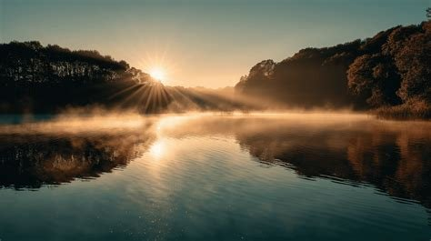
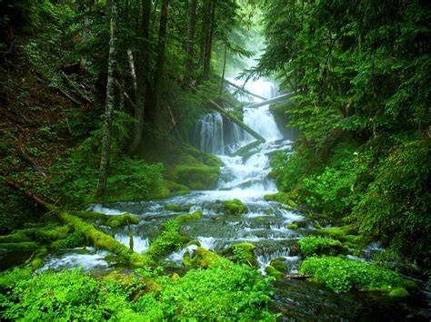
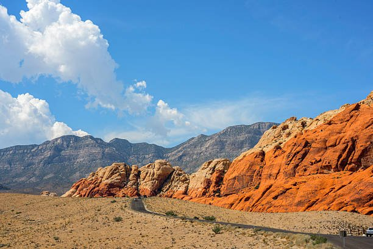
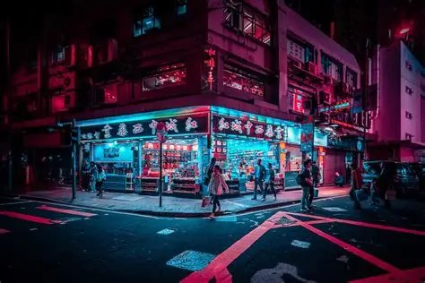
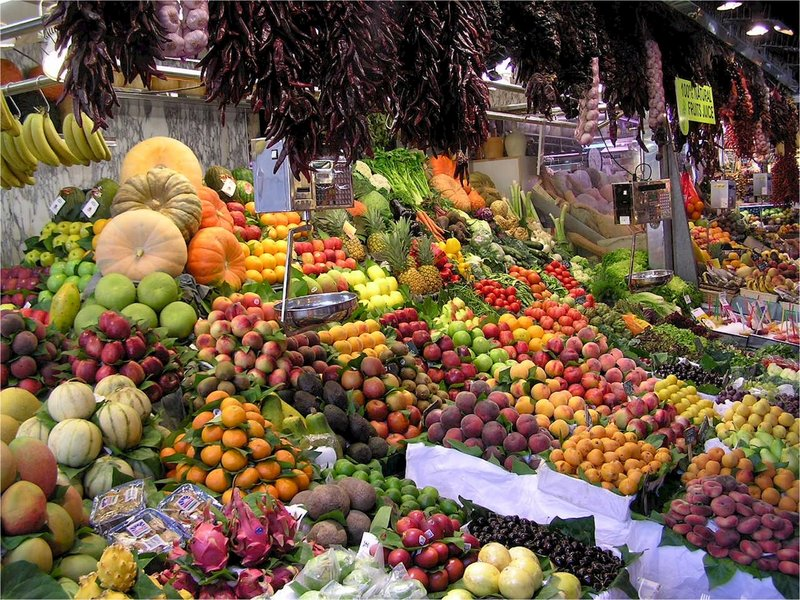
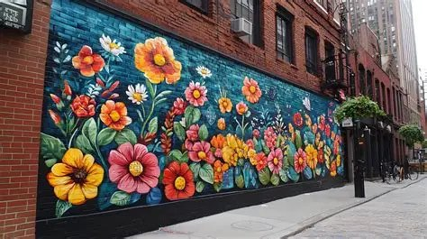
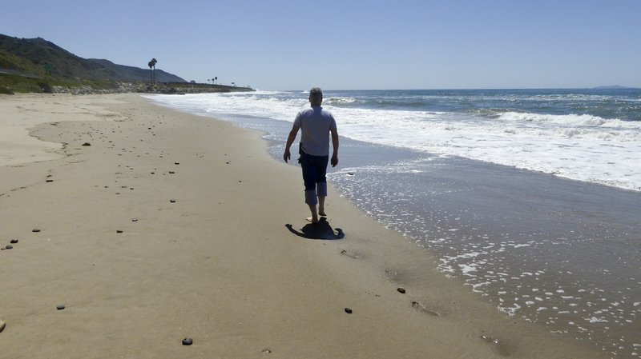
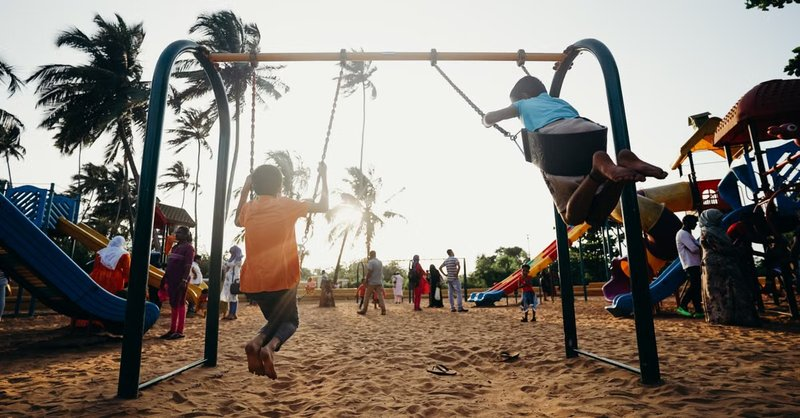

Gallery of Past Winners
Welcome to the Macomb Photo Club's permanent gallery of past contest winners. This page is our way of honoring the talented photographers in our community whose work has been recognized by their peers through the monthly voting process. Every image displayed here was voted the best in its category by our membership, and each one represents a genuine moment of creative vision and technical skill. We are incredibly proud of the diverse range of photographs that have been submitted and celebrated over the years. From sweeping natural landscapes to intimate human portraits, the breadth of talent in the Macomb area never ceases to amaze us.
The gallery is organized by category so you can easily browse winning images in the subject areas that interest you most. We add new winners at the beginning of each month following the close of voting. If you see your photo here, congratulations — and thank you for sharing your art with our community! If you have not yet entered a contest, we hope that the incredible work on display here will inspire you to pick up your camera, capture something extraordinary, and submit it for next month's competition. Winners are eligible to enter future contests and may win in multiple categories over time.
Nature & Landscape Winners



Urban & Street Winners



Portrait & People Winners

